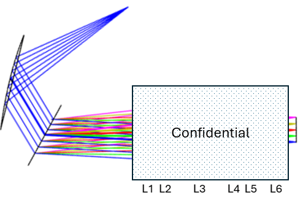
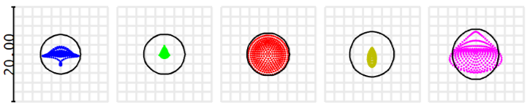
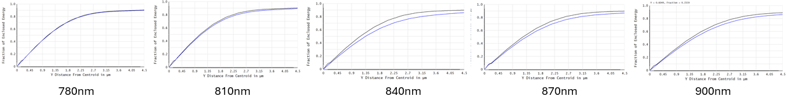
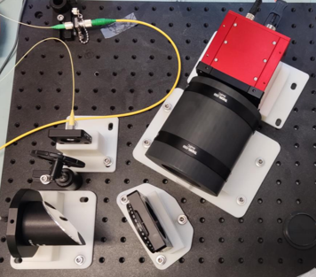
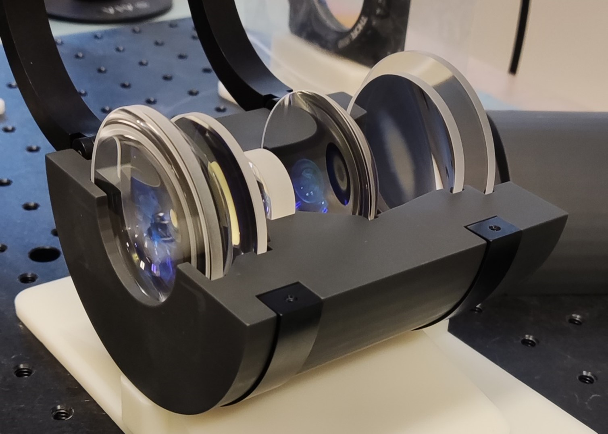
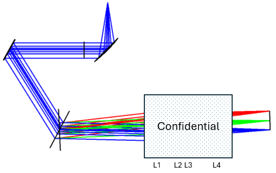

High speed spectrometers for multiple SD-OCT systems
Description:
Design and configure of the high speed spectrometer from off-the-shell optics
Time: Sep.2022
Introduction:
A spectrometer is a crucial component of the optical coherence tomography system,
functioning as the data acquisition unit to collect coherent fringe data. These systems
are constructed using off-the-shelf optics, which provide immediate availability and cost
efficiency, making them suitable for widespread applications due to their broad compatibility
and universality. This is especially beneficial for rapidly prototyping the spectrometer
at a low cost.
Spectrometer 1:
Centeral wavelength: 840nm, bandwidth: 100nm, imaging speed: 600kHz.

2D schematic of the spectrometer with the lenses from Thorlabs, Edmund and Optosigma

2D schematic of the spectrometer

Encircled energy of the sepctrometer

Photo of the sepctrometer

Photo of the focusing unit
Spectrometer 2:
Centeral wavelength: 840nm, bandwidth: 100nm, imaging speed: 250kHz.

2D schematic of the spectrometer with the lenses from Thorlabs, Edmund

Spot diagram of the sepctrometer

Encircled energy of the sepctrometer